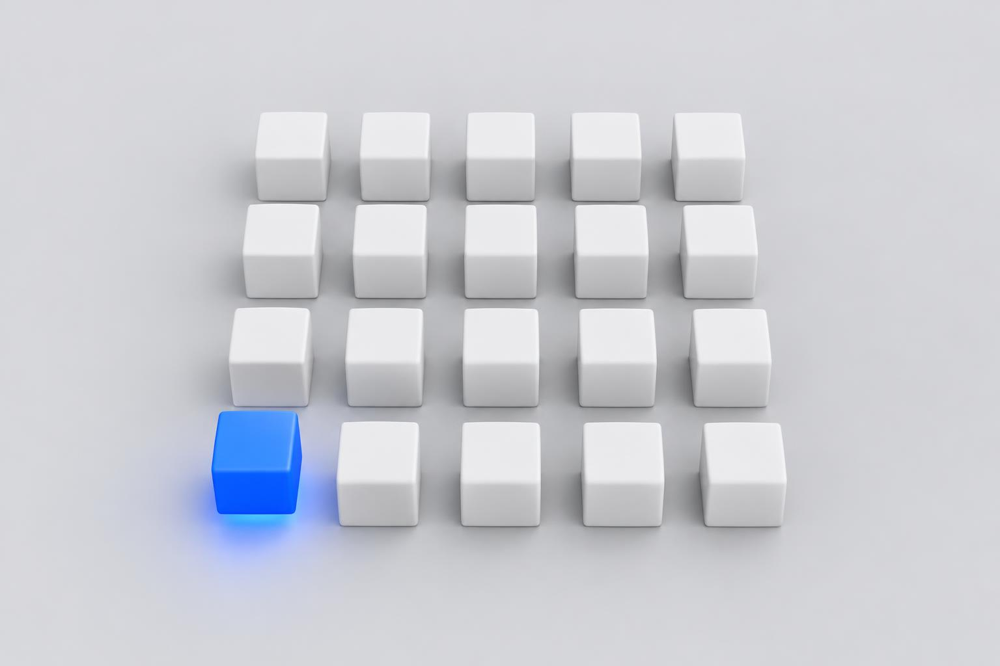

Маркетинг · план развития
Ollinter: система роста международной платформы экспертов
От первого работающего сегмента — к повторяемой модели привлечения экспертов и клиентов на разных рынках.
Масштаб
Ollinter — платформа, где человек находит нужного специалиста
Преподаватель языка, маркетолог, дизайнер, разработчик, бизнес-консультант. Платформа такого размера строится не запуском всего сразу, а схемой, которую сначала проверяют на одном сегменте и затем переносят дальше.
Категории экспертов
Преподаватели языков, маркетологи, дизайнеры, разработчики, консультанты.
Языки и рынки
Английский, затем другие языки и страны по мере проверки спроса.
Один сегмент
Первый эксперимент — на пересечении одной категории и одного рынка.
Карта роста
Категории × рынки: каждая ячейка — отдельное направление
| Рынок / язык | Преподаватели языков | Маркетологи | Дизайнеры | Разработчики | Консультанты |
|---|---|---|---|---|---|
| Английский | Старт | Следующее направление | Следующее направление | Следующее направление | Следующее направление |
| Второй язык | После первого теста | Дальше по карте | Дальше по карте | Дальше по карте | Дальше по карте |
| Новые страны | Дальше по карте | Дальше по карте | Дальше по карте | Дальше по карте | Дальше по карте |
Что нужно каждому направлению
Эксперты
Стартовая группа специалистов, чтобы каталог не выглядел пустым.
Предложение
Отдельное для экспертов и отдельное для клиентов: у них разные причины прийти.
Страница
Минимальная адаптация под сегмент; отдельная страница — там, где это даёт конверсию.
Реклама
Свои объявления под мотивы этой аудитории, а не переписанные чужие.
Цифры
Свои показатели: цена перехода, действия на сайте, контакты со специалистом.
Решение
Масштабировать, доработать или приостановить — по результатам теста.

Первый сегмент
Начинаем с преподавателей английского

- У вас уже зарегистрированы первые преподаватели — сегмент не нужно собирать с нуля.
- У вас есть внутренняя экспертиза в этой сфере: понятно, чего хотят специалисты.
- Вы можете сами привлечь преподавателей и поговорить с ними и с учениками.
- Не нужно параллельно разбираться в незнакомой отрасли.
- Быстро станет видно, что мешает ученику дойти до преподавателя.
- Всё, что узнаем здесь, переносится на следующий сегмент.
Запуск
Восемь шагов запуска сегмента. Реклама — шестая
- ПредложениеПочему преподавателю стоит зарегистрироваться, чем платформа полезна ученику, как они связываются и как платформа узнаёт, что контакт состоялся.
- Стартовая группа экспертов5–10 преподавателей: описание, специализация, формат занятий, цена или способ её узнать, фото, понятный следующий шаг.
- Путь клиентаПройти целиком: от объявления до первого шага к занятию. Где человек не понимает, куда нажимать, — чиним до оплаты трафика.
- Посадочная страницаНе весь сайт, а страница для учеников. Отдельно решаем, нужна ли страница для преподавателей.
- АналитикаЗаранее выбираем, какие действия считаем: визит, поиск, просмотр профиля, нажатие на контакт.
- Первая рекламаОсновная гипотеза — Meta Ads. Google Ads проверяем по поисковому спросу, цене клика и конкуренции.
- ИнтервьюС зарегистрировавшимися преподавателями и с людьми, которые искали, но не связались.
- Доработка и повторИсправляем найденное, меняем тексты и объявления, повторяем тест.
Путь ученика
От объявления до контакта с преподавателем
Метрики
Четыре уровня: от клика до ценности для бизнеса
Повторяемая система
Следующий сегмент проходит тот же цикл
Масштабировать
Есть признаки работающей модели.
Доработать
Интерес виден, мешают конкретные препятствия.
Приостановить
Гипотеза не подтверждается или проверка слишком дорога.
Языки и страны
Новый рынок — тот же цикл плюс адаптация

- Берём проверенноеТо, что сработало в первом сегменте: предложение, объявления, структуру страницы.
- Выбираем рынокПо спросу, цене рекламы и наличию подходящих экспертов на этом языке.
- АдаптируемСтраницу, профили и рекламные сообщения под язык и контекст. Перевод и озвучку ускоряют ИИ-инструменты, ElevenLabs в том числе.
- Тестируем ограниченным бюджетомСравниваем с первым рынком и только потом увеличиваем вложения.
Дорожная карта
Пять месяцев
Первый этап
Стратегия, подготовка и тест сегмента преподавателей английского
Стартовый спринт: подготовка и запуск в первую рабочую неделю, ориентир 5–7 рабочих дней. Дальше — наблюдение за результатами и оптимизация.
Входит
- Стратегическая проработка первого сегмента
- Предложение для преподавателей и для учеников
- Проверка готовности продукта к запуску
- План привлечения стартовой группы экспертов
- Структура рекламного теста
- Рекламные гипотезы и тексты
- Требования к посадочной странице
- План аналитики и отслеживания событий
- Запуск первой согласованной кампании
- Рекомендации по первой оптимизации
Оплачивается отдельно
- Рекламный бюджет
- Разработка, редизайн, программирование
- Платные сторонние инструменты
- Перевод и локализация
- Неограниченные креативы
- Многомесячное ведение рекламы
- Привлечение экспертов «под ключ» и серия интервью
Дальнейшее сотрудничество
Вопросы
То, что обычно спрашивают до старта
Почему нельзя запустить рекламу во всех категориях сразу?
Без предложения, достаточного числа специалистов и аналитики бюджет распыляется, и потом не видно, что сработало. Сначала один сегмент, затем перенос.
Почему преподаватели английского?
У проекта уже есть первые специалисты и внутренняя экспертиза. Это самая быстрая проверка самой модели платформы.
Почему нужна страница, а не только реклама?
Реклама приводит человека на сайт, но не убеждает им пользоваться. Если каталог не вызывает доверия, деньги уходят на посетителей без действий.
Почему не выйти сразу на несколько стран?
Изучать несколько рынков параллельно можно. Крупные расходы идут туда, где видны спрос, доступные специалисты и путь к результату.
Можно ли гарантировать количество клиентов?
Нет. Гарантируются объём работ, настроенные измерения, проверка гипотез и решения по результатам.
Что будет, если первый тест не сработает?
Разберём, где проблема: спрос, предложение, реклама, страница, выбор специалистов или путь пользователя. Решим, что менять и проверять повторно.
Решение
Что делаем сейчас
- Согласовать стартовый сегментПреподаватели английского.
- Проверить профили и путь пользователяГлазами ученика, по шагам.
- Определить предложениеОтдельно для преподавателей, отдельно для учеников.
- Подготовить страницу и измерение действийМинимум, достаточный для запуска.
- Запустить первый контролируемый тестБюджет согласуем после оценки аудитории и цены трафика.
- Собрать данные и обратную связьЦифры и интервью.
- Решить, что улучшать и когда расширятьсяПо результатам.
Начинаем с одного сегмента, чтобы собрать работающую модель
Её можно последовательно переносить на новые категории и рынки — это и есть система роста, а не разовая рекламная кампания.